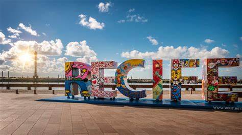
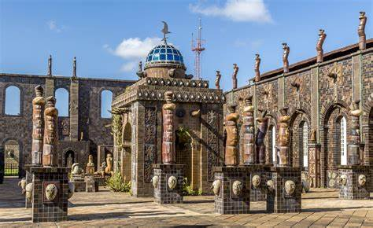
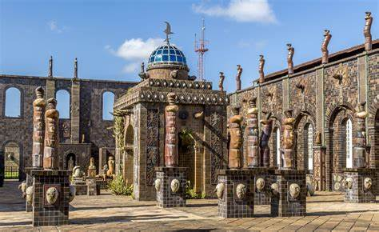
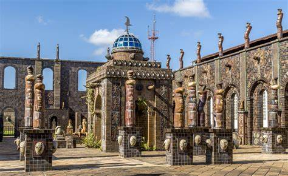
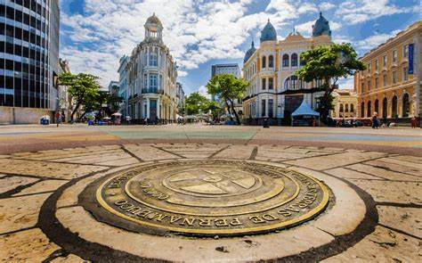

Recife
Sobre Recife
Recife é um município brasileiro, capital do estado de Pernambuco, localizado na Região Nordeste do país. Com área territorial de aproximadamente 218 km², é formado por uma planície aluvial, tendo as ilhas, penínsulas e manguezais como suas principais características geográficas.[3][7] Cidade nordestina com o melhor Índice de Desenvolvimento Humano (IDH-M), o Recife é a quarta capital brasileira na hierarquia da gestão federal, após Brasília, Rio de Janeiro e São Paulo, e possui o quarto aglomerado urbano mais populoso do Brasil, com 4 milhões de habitantes em 2017, superado apenas pelas concentrações urbanas de São Paulo, Rio de Janeiro e Belo Horizonte.
Fonte: wikipédia
 



Marco zero
Localizado no coração do Recife Antigo, a Praça Rio Branco, mais conhecida como Praça do Marco Zero, é o ponto de origem da capital de Pernambuco. No centro do solo da praça, preste atenção na Rosa do Ventos, do artista plástico pernambucano Cícero Dias. Com cerca de 40 m², a peça, inspirada em sua obra "Eu vi o mundo... Ele começava no Recife", é formada por pedras de quartzo e granito com pigmentação colorida, misturando elementos subjetivos, geométricos e astrológicos para sustentar a mensagem do artista. Se o mundo, de fato, começou no Recife, não se sabe. Por outro lado, quem ousa discordar do mestre Cícero Dias? Autor de infinitos painéis e telas (é dele o primeiro mural abstrato da América Latina, exposto na secretaria da Fazenda de Pernambuco), Cícero Dias é considerado um dos pioneiros do Modernismo no Brasil.
